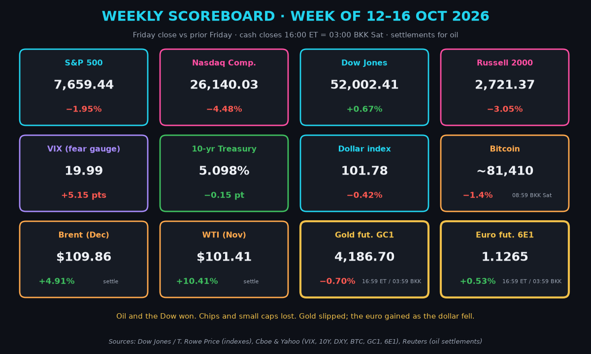
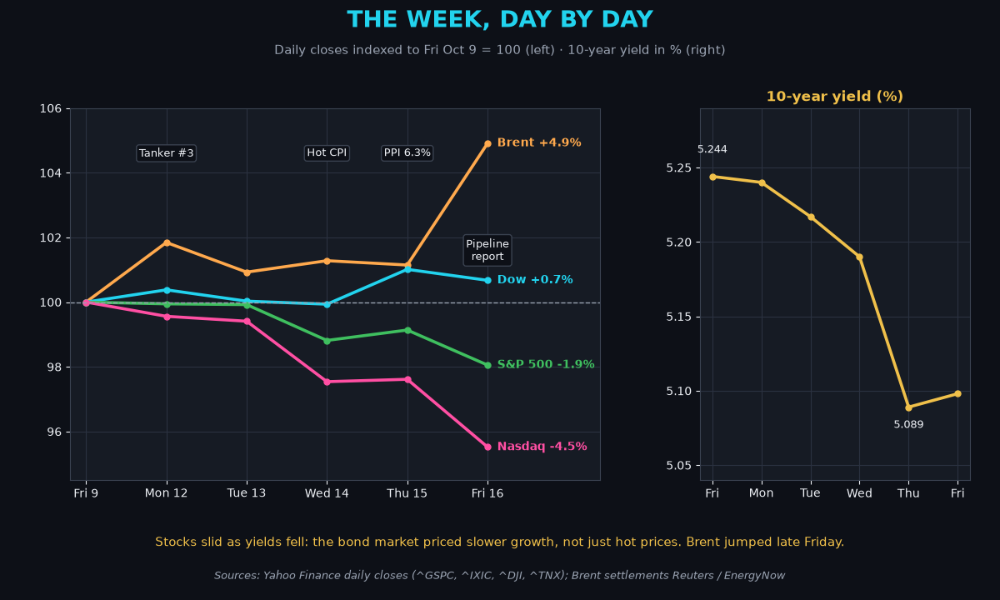
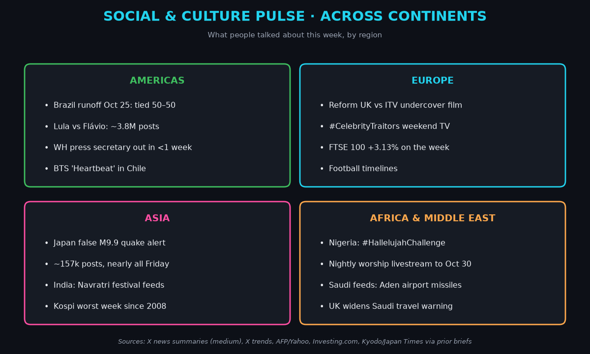
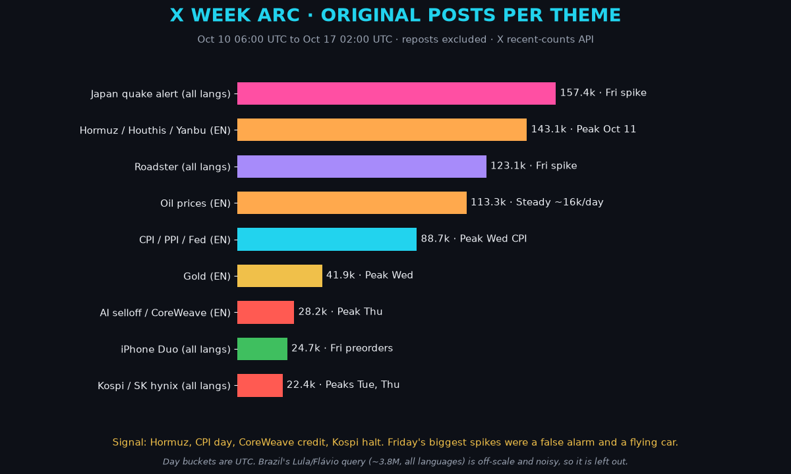
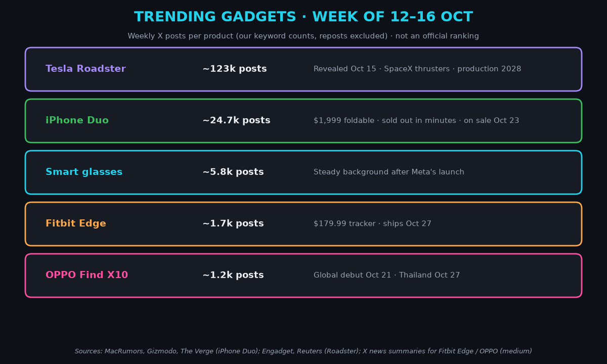
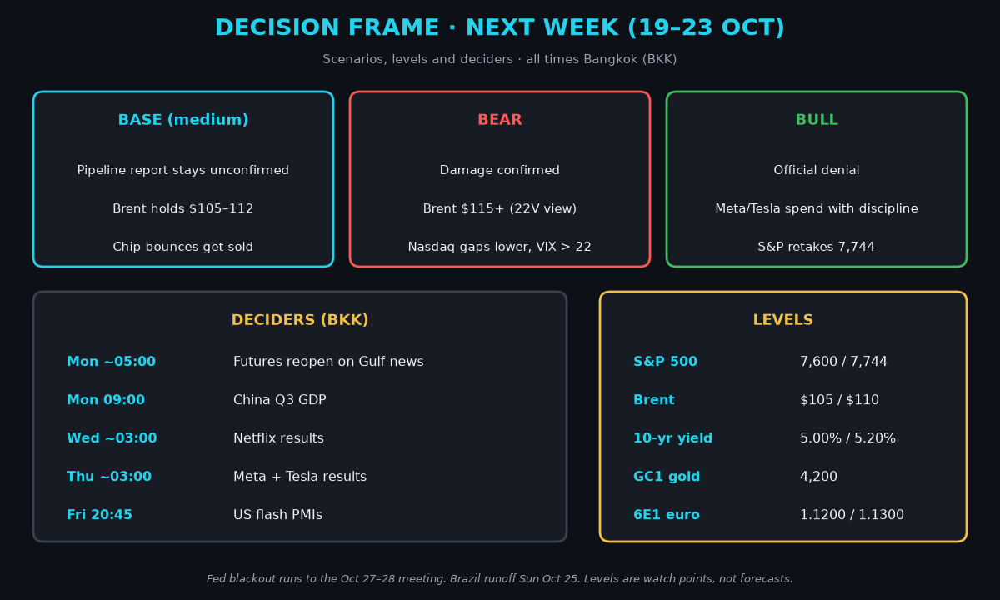

Saturday Weekly Markets Wrap · Sat Oct 17, 2026 (BKK)
April · Weekly Markets Wrap · 2026-10-17
Week of Mon Oct 12 to Fri Oct 16. US closes are Friday 16:00 ET, which is 03:00 Saturday Bangkok time (BKK), unless noted.
Headline: AI turned into a credit story and oil turned back into a war story. The S&P 500 fell 1.95% to 7,659.44, its worst week since late June. Brent settled at $109.86 after a late Friday spike.
So what? Most stocks actually rose. The index fell because a handful of AI giants are the index. Oil-driven inflation plus a Fed still talking hikes is the mix traders call stagflation risk: rising prices with slowing growth.

- Stocks: S&P 500 7,659.44 (−1.95%). Nasdaq 26,140.03 (−4.48%). Dow 52,002.41 (+0.67%). Russell 2000 small caps 2,721.37 (−3.05%). (T. Rowe Price, Dow Jones)
- Fear and rates: VIX, the "fear gauge" built from option prices, 19.99, up 5.15 points (about +35%). 10-year yield 5.098%, down about 0.15 percentage points. (Cboe via Yahoo)
- Dollar and oil: Dollar index (DXY) 101.78 (−0.42%). Brent $109.86 (+4.91%). WTI $101.41 (+10.41%). (Yahoo; Reuters settlements)
- Bitcoin about $81,410 (about −1.4%) at 08:59 BKK Saturday. (Yahoo; medium)
- Gold futures (GC1, Dec) 4,186.70, −0.70% on the week, at 16:59 ET Friday / 03:59 BKK Saturday (Yahoo; Reuters settle 4,181.10). Driver: hot inflation kept hike bets alive, but a softer dollar and lower yields pulled gold back toward 4,200.
- Euro futures (6E1, Dec) 1.1265, +0.53% on the week, at 16:59 ET Friday / 03:59 BKK Saturday (Yahoo). Driver: the dollar's first weekly fall in five weeks lifted the euro off a 17-month low.
1) What happened
The takeaway: the AI boom now has a financing problem, and oil keeps feeding inflation.

- Monday–Tuesday: oil and banks. A third Hormuz tanker incident pushed Brent to a $106.65 settle. JPMorgan missed; Goldman crushed forecasts. Chips cracked after Broadcom's Hock Tan warned of "extreme expectations."
- Wednesday: hot inflation. Consumer prices rose 3.7% over the year; core prices, which skip food and energy, 2.6%. Bank of America fell about 7% after a $1.2B penalty. CoreWeave, which rents out AI computing power, fell 15% as its bonds yielded about 15%.
- Thursday: growth worry won. Producer prices rose 6.3%, the most since 2022, but core retail spending (the "control group") rose only 0.1%. The 10-year fell to 5.089%. Korea's Kospi fell 7.6% and briefly halted trading.
- Friday: the late oil shock. Import prices rose 8.1% over the year, the most since 2022 (BLS). Then Iranian media reported a strike on Saudi Arabia's East-West pipeline. It is unconfirmed. Brent touched $110 and the Nasdaq closed at its lows. Saudi-led forces said they intercepted a missile aimed at the Yanbu export hub. (Reuters, Investing.com)
- Chips had a brutal week. The SOX chip index fell 11.4% (GMT Eight). The Kospi lost about 14.5%, its worst week since 2008 (22V; medium).
- Europe quietly won. STOXX 600 +2.09%, FTSE 100 +3.13%. (T. Rowe Price)
- The Fed went quiet. Chair Warsh said in Bangkok he does not "prejudge" meetings. Friday odds: about 17% for an October hike, about 74% by December (CME FedWatch via T. Rowe Price and 22V; medium-high). The Fed's blackout, a no-comment period, runs until the Oct 27–28 meeting.
- Governments leaned against oil. The IEA will release over 20 million barrels of fuel; the US offered up to 17 million barrels from its reserve. (Reuters)
Mentor beat: bonds usually rally when stocks fall. Friday they barely moved. When the shock is oil-driven inflation, bonds stop acting as a cushion.
2) Social and culture pulse
The takeaway: the loudest culture stories were politics and faith, not finance.

- Americas. Brazil's Oct 25 runoff is tied at 50–50 in a PoderData poll (X news; medium). Lula's camp says Meta's AI blocked his campaign images (medium). White House press secretary Katie Zacharia was pushed out after less than a week (AFP via Yahoo). BTS's "Heartbeat" debut in Chile trended worldwide (X news; medium).
- Europe. Reform UK faced heat over an ITV undercover report airing Sunday (medium). Weekend timelines are #CelebrityTraitors and football.
- Asia. Japan sent a false magnitude 9.9 quake alert Friday and canceled it within about 12 minutes; no evidence of hacking. India's feeds are Navratri festival posts.
- Africa and Middle East. Nigeria's Hallelujah Challenge, a nightly worship livestream through Oct 30, trended in Nigeria, the UK and worldwide (X news; medium). Saudi feeds tracked missiles at Yemen's Aden airport. Britain widened its travel warning to all of Saudi Arabia. (Investing.com)
3) X trends: the week arc
The takeaway: Hormuz led market chatter all week, but Tesla's flying Roadster and Japan's false alert owned Friday.

- Hormuz and Houthis: about 143k posts. Peaked Oct 11 (29k) after strikes on Riyadh airport, then faded even as oil rose.
- Oil prices: about 113k, a steady 16k a day.
- CPI and Fed: about 89k, peaking at 32k on CPI Wednesday.
- Gold about 42k. AI selloff and CoreWeave about 28k. Kospi about 22k.
- Friday's spikes: the Roadster (about 123k, 103k in one day) and Japan's quake alert (about 157k, almost all Friday).
- Signal: Hormuz, CPI day, CoreWeave credit, the Kospi halt. Noise: WWE, college football, "buy the dip" chatter.
- Saturday coda (about 09:00 BKK): US trends are wrestling and sports; worldwide is Brazil campaign tags. Use the week arc, not the coda.
4) Trending gadgets
The takeaway: Apple's first foldable is the gadget of the week, and it sold out in minutes at $1,999.

- iPhone Duo. Pre-orders opened Friday. Launch-day stock sold out in minutes; new orders ship late January 2027 (MacRumors, Gizmodo). Apple called demand "extraordinary" (The Verge). About 24.7k posts, 13.5k on Friday.
- Tesla Roadster. Revealed near Waco with SpaceX thrusters that let it hop and flip. Production starts in 2028; the thruster version takes about $250,000 to reserve (Engadget, Reuters). Tesla stock still fell 2.1% Friday.
- Smaller waves. Google's $179.99 Fitbit Edge ships Oct 27; OPPO's Find X10 debuts Oct 21 (X news; medium). Smart glasses held near 5.8k posts.
5) Decision frames for traders and investors
The takeaway: next week is oil headlines plus Meta's spending plans. Keep positions small until both clear.

- Base case (medium): the pipeline report stays unconfirmed. Brent holds $105–112. Chip bounces get sold. Energy and defensives (steady sectors like utilities and food) lead.
- Bear case: damage confirmed. Brent $115 or more (22V view). The Nasdaq opens sharply lower and the VIX tops 22.
- Bull case: an official denial plus disciplined Meta and Tesla spending. The S&P retakes 7,744, Thursday's close.
- Levels: S&P 7,600 and 7,744. Brent $105 and $110. WTI $100. 10-year 5.00% and 5.20%. GC1 4,200. 6E1 1.1200 and 1.1300.
- Deciders (BKK): futures reopen Monday about 05:00 on weekend Gulf news. China Q3 GDP Monday 09:00. Netflix about 03:00 Wednesday. Meta and Tesla about 03:00 Thursday. US flash business surveys Friday 20:45.
- For Jim: gold needs yields under 5.10% to hold 4,200. The euro has room while DXY stays under 102. A confirmed pipeline hit would lift the dollar and stall both.
Interpretive aside: the chip index fell eight days straight, and eight is China's luckiest number. The market did not get the memo. Facts win.
Confidence: closes, settlements and US data are high (Dow Jones, Reuters, BLS). Futures are Yahoo's last trade. Fed odds are medium-high. X news summaries are medium. The pipeline strike is unconfirmed.